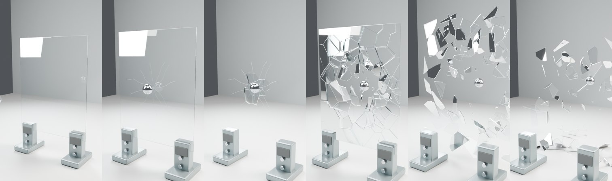

유리 파손 재설계 · V5 품질 시험
전체 영상을 또 만든 것이 아닙니다. 기존 V4에서 특히 엉성했던 유리 하나의 반사·굴절·균열·파편을 새로 제작해 약 1.5초만 검증하는 작업입니다. 아직 실사급 최종 결과가 아닙니다.
기존 V4 · 전체 영상 (8초)
기존 투명도 흉내, 얇게 보이지 않는 파편, 멀리서 보는 카메라
새 V5 · 한 장 품질 시험 (1.5초)
실제 굴절을 계산하는 렌더링, 베벨을 준 유리 단면, 미세 균열과 충격 후 이동
전후 변화 6개 프레임

이 장면의 품질을 평가한 뒤 새총, 다중 유리판, 카메라 환경을 재제작할 계획입니다. 기존 V4는 보존돼 있습니다.